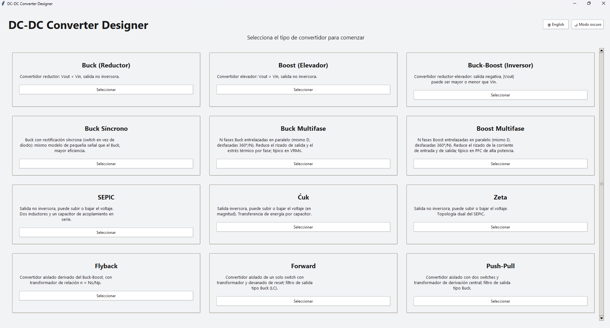
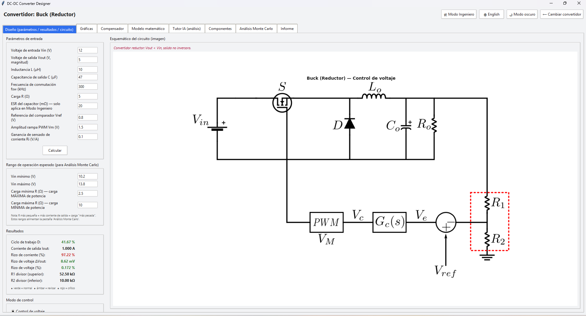
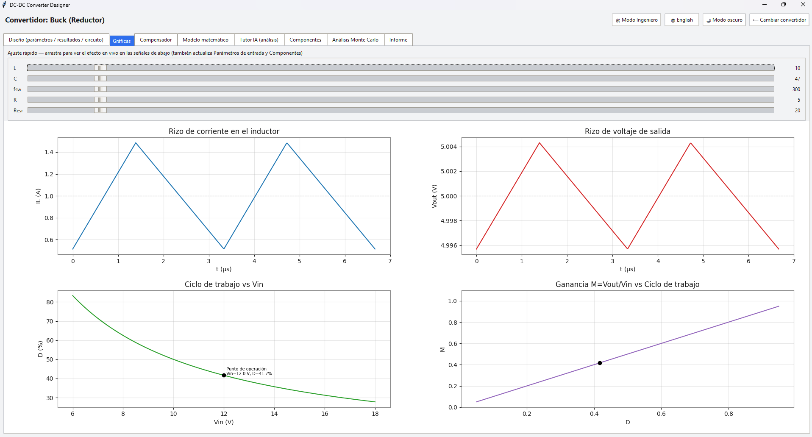

CoreVolt es una plataforma de software especializada, desarrollada para facilitar el diseño analítico, la validación preliminar y la comprensión didáctica de los convertidores de potencia CD-CD y CA-CD. Actúa como una capa intermedia entre el diseño analítico de los libros de texto y los entornos de simulación de circuitos a escala real, permitiendo iterar rápidamente el diseño sin perder la comprensión física del funcionamiento del convertidor.
Todo lo que CoreVolt ofrece para el diseño de convertidores de potencia.
Flujo de trabajo transparente donde cada cálculo se basa en principios bien establecidos de la electrónica de potencia, asociando claramente las especificaciones con los valores de los componentes.
Soporte para convertidores Buck, Boost, DAB y Cuk, con planes de expansión a nuevas topologías CD-CD y CA-CD.
Modelos basados en aprendizaje automático que predicen las pérdidas de potencia del convertidor sin necesidad de simulaciones exhaustivas.
Balancea automáticamente eficiencia energética contra volumen físico para encontrar el diseño óptimo según tus restricciones.
Determina automáticamente magnitudes de ondulación de corriente y voltaje, y los límites de operación segura del convertidor.
Pensado para la enseñanza académica y la validación previa al desarrollo de hardware, ideal para estudiantes e ingenieros en formación.
Vistas de la interfaz y del flujo de diseño de CoreVolt.



Mira a CoreVolt en acción.
CoreVolt es un desarrollo independiente. Si te resulta útil y quieres ayudar a que siga creciendo (nuevas topologías, más funciones y mejor documentación), considera hacer una donación.